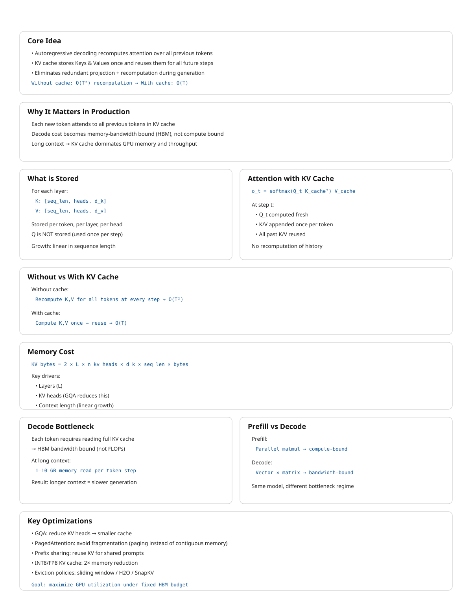

7 KV Cache
The canonical question for this chapter: Generating one token requires attending to every previous token. How do we avoid recomputing all of that work on every single generation step and what does managing that memory look like in a production system?
7.1 The problem that KV cache solves
Autoregressive generation is fundamentally sequential and generating each token requires attending to all previously generated tokens. To generate token t, the model must attend to all preceding tokens 0 through t−1, and generating each subsequent token expands the context by one, requiring the model to repeatedly process the entire accumulated sequence.
Without caching, generating a 500 token response to a 100 token prompt would require:
Step 1: process 101 tokens → generate token 101
Step 2: process 102 tokens → generate token 102
...
Step 500: process 600 tokens → generate token 600Total compute proportional to \(101 + 102 + ... + 600 ≈ 175,000\) token processing steps. For large models, this process is highly inefficient: by step 500, most of the computation power is spent to reprocess tokens that were already handled at step 1, recomputing the same key and value vectors even though the underlying inputs have not changed.
The KV cache eliminates this redundancy by computing key and value vectors only once and stores them in memory. At each new generation step, the model computes the new token’s Q, K, and V vectors, retrieves the cached keys and values for all previous tokens, and performs attention over the full cached context.
With the KV cache:
Prefill: process all 100 prompt tokens once, store their K and V
Each decode step: compute K, V for one new token, append to cache, attend
Total work: proportional to 100 (prefill) + 500 (one step per token)The savings grow with sequence length. Without the KV cache, practical LLM deployment at today’s context lengths would be economically infeasible.
7.2 What is stored
For each token in the sequence, for each transformer layer, for each KV head, the cache stores two vectors: the key and value produced by the linear projections of that token’s hidden state.
KV cache structure:
Layer 0:
K: [seq_len, n_kv_heads, d_k] ← key vectors for all tokens so far
V: [seq_len, n_kv_heads, d_v] ← value vectors for all tokens so far
Layer 1:
K: [seq_len, n_kv_heads, d_k]
V: [seq_len, n_kv_heads, d_v]
...
Layer L-1:
K: [seq_len, n_kv_heads, d_k]
V: [seq_len, n_kv_heads, d_v]Query vectors are not cached because they are used only once: the query for token t is needed solely to compute attention at generation step t and becomes irrelevant afterward. On the other hand, the key and value vectors for token t are reused at every subsequent step until generation ends. The KV cache exploit this asymmetry by storing persistent keys and values while recomputing only the transient query vectors.
7.3 Attention with and without a KV cache
Consider a single attention head. After processing a sequence of length (t),
\[ K_t = \begin{bmatrix} k_1 \\ k_2 \\ \vdots \\ k_t \end{bmatrix}, \quad V_t = \begin{bmatrix} v_1 \\ v_2 \\ \vdots \\ v_t \end{bmatrix}. \]
To generate the next token, the model first computes the hidden state (\(h_{t+1}\)) and projects it to
\[ q_{t+1} = W_Q h_{t+1}, \quad k_{t+1} = W_K h_{t+1}, \quad v_{t+1} = W_V h_{t+1}. \]
The attention output is
\[ o_{t+1} = \text{softmax}\!\left(\frac{1}{\sqrt{d_k}} q_{t+1} \begin{bmatrix} K_t & k_{t+1} \end{bmatrix}^T \right) \begin{bmatrix} V_t & v_{t+1} \end{bmatrix}. \]
The important observation is that all previous keys and values already exist:
\[ K_t = [k_1, \dots, k_t], \quad V_t = [v_1, \dots, v_t]. \]
Only the final column \(k_{t+1}, v_{t+1}\) must be computed and appended.
7.3.1 Without caching
At step \(t+1\), the model recomputes
\[ \{k_1, \dots, k_t, k_{t+1}\}, \quad \{v_1, \dots, v_t, v_{t+1}\}. \]
The cost of the key/value projections is therefore \(O(t+1)\). Across an entire generation of length \(T\),
\[ \sum_{t=1}^{T} O(t) = O(T^2). \]
7.3.2 With caching
The projections
\[ k_i = W_K h_i, \quad v_i = W_V h_i \]
are computed only once when token \(i\) is created. During generation of step \(t+1\), the model only needs to compute the new projections \(k_{t+1}, v_{t+1}\) which results in \(O(1)\) projection cost per step. Over a full sequence of length T, this accumulates to \(\sum_{t=1}^{T} O(1) = O(T).\)
The attention computation itself still grows linearly with context length, but the repeated projection cost has been eliminated.
7.4 Memory arithmetic
KV cache memory is deterministic and computable from model hyperparameters and sequence length:
KV cache bytes = 2 × L × n_kv_heads × d_k × seq_len × bytes_per_elementWhere 2 is for K and V, L is the number of transformer layers, n_kv_heads is the number of KV heads (equals n_heads for MHA, fewer for GQA), d_k is the key/value dimension per head, and bytes_per_element is 2 for BF16.
7.4.1 Examples
LLaMA 2 7B (L=32, n_kv_heads=32, d_k=128, BF16):
Per token: 2 × 32 × 32 × 128 × 2 = 524,288 bytes = 512 KB
4,096 tokens: 512 KB × 4,096 = 2 GBLLaMA 2 70B (L=80, n_kv_heads=8, d_k=128, BF16):
Per token: 2 × 80 × 8 × 128 × 2 = 327,680 bytes = 320 KB
4,096 tokens: 320 KB × 4,096 = 1.28 GB
32,768 tokens: 320 KB × 32,768 = 10 GBGPT-3 175B (L=96, n_kv_heads=96, d_k=128, BF16):
Per token: 2 × 96 × 96 × 128 × 2 = 4,718,592 bytes ≈ 4.5 MB
4,096 tokens: 4.5 MB × 4,096 = 18 GBThe GPT-3 numbers explain why GQA was adopted: reducing n_kv_heads from 96 to 8 reduces the per-token cache from 4.5 MB to 375 KB (12 times reduction) with modest quality loss. GQA is now standard in nearly every new model architecture for exactly this reason.
7.4.2 The memory budget
A serving instance has a fixed GPU memory budget, divided between competing claims:
Total GPU memory (e.g., 80 GB H100)
├── Model weights (fixed, e.g., ~35 GB for LLaMA 2 70B in BF16 with GQA)
├── Activation memory (fixed per batch, ~1–3 GB)
├── KV cache (variable that grow with sequence length and batch size)
└── Reserved (CUDA overhead, fragmentation buffer, ~3 GB)
Available for KV cache: 80 - 35 - 2 - 3 ≈ 40 GBFor LLaMA 2 70B with 40 GB available:
Max tokens in cache: 40 GB / 320 KB ≈ 125,000 tokens
Batch size 32, avg sequence 4,096 tokens:
32 × 4,096 = 131,072 tokens → barely fits
Batch size 32, avg sequence 8,192 tokens:
32 × 8,192 = 262,144 tokens → does not fitThis is the core serving constraint: KV cache capacity limits concurrency at long sequence lengths. Every additional token in context competes directly with additional concurrent users for the same GPU memory.
7.5 The lifecycle of a KV cache entry
Understanding the sequence of operations that touch the KV cache during a single request makes the memory management problem concrete.
7.5.1 Prefill
When a request arrives, the full prompt is tokenized and processed in a single forward pass (the prefill phase). For each layer, K and V are computed for every prompt token simultaneously and written to the KV cache:
Input: [tok_0, tok_1, tok_2, ..., tok_n] ← full prompt
Output: KV cache populated for positions 0 through n
Model output: logits at position n → first generated tokenPrefill is compute-bound and processing all prompt tokens in parallel is a large batch matrix multiply that saturates GPU arithmetic throughput. It is the phase where prompt length most directly affects latency: time to first token scales with prompt length.
7.5.2 Decode
Each decode step generates exactly one new token:
1. Embed new token → hidden state
2. Compute K, V for new token → append to KV cache
3. Compute Q for new token
4. Attend: Q against full KV cache (all positions 0 through current)
5. FFN and residual → logits → sample next tokenStep 4 is memory-bandwidth-bound. The GPU reads the entire KV cache to compute attention for a single query vector. Arithmetic work is trivial compared to the memory transfer. This is why decode throughput is limited by HBM bandwidth, not by compute, and why longer sequences are slower per token.
7.5.3 Request completion
When generation ends (stop token, max_tokens, stop sequence), the KV cache entries for that request are freed. In a naive contiguous allocator this means marking a region of memory as available. In PagedAttention it means returning individual pages to the free pool.
7.6 Naive allocation and its problems
The simplest KV cache allocation strategy: at request admission, allocate a contiguous block of memory sized for the maximum possible output length. Hold it until generation completes, then free it.
This produces two forms of waste:
Internal fragmentation. If the request was allocated 8,192 token positions but only generated 200 tokens, the remaining 7,992 positions were reserved but unused for the lifetime of the request. At 320 KB per token for LLaMA 2 70B, that is 2.55 GB of unusable memory per such request.
External fragmentation. As requests arrive and complete with variable lengths, the free memory becomes fragmented into non-contiguous gaps. A new request requiring 1 GB may fail to be admitted even if 2 GB is technically free, because no single contiguous 1 GB region is available.
On real workloads with variable request lengths, naive allocation wastes 60–80% of available KV cache memory.
7.7 PagedAttention
PagedAttention (Kwon et al., 2023) solves the fragmentation problem by borrowing the virtual memory paging idea from operating systems.
Instead of allocating a contiguous block per request, PagedAttention divides the KV cache into fixed-size pages which typically has 16 tokens per page. A page table maps logical token positions to physical page locations. Pages are allocated on demand as generation proceeds and freed immediately on completion.
Page table for three concurrent requests:
Request A (generating, 48 tokens so far):
Logical positions 0–15 → Physical page 3
Logical positions 16–31 → Physical page 7
Logical positions 32–47 → Physical page 12
Request B (generating, 32 tokens so far):
Logical positions 0–15 → Physical page 1
Logical positions 16–31 → Physical page 9
Request C (generating, 64 tokens so far):
Logical positions 0–15 → Physical page 2
Logical positions 16–31 → Physical page 4
Logical positions 32–47 → Physical page 5
Logical positions 48–63 → Physical page 11
Free pages: [0, 6, 8, 10, 13, 14, 15, ...]Physical pages are non-contiguous. Logical positions map to whatever physical page is available. A new request needs four pages for a 64-token sequence; it gets four pages from the free pool regardless of where they are in physical memory.
Internal fragmentation is bounded to at most one partially filled page per request (the current page being written). External fragmentation is eliminated entirely and all free pages are usable regardless of their physical location. PagedAttention achieves over 90% KV cache utilization on typical workloads, compared to 20–40% for naive contiguous allocation.
7.7.1 Prefix sharing
PagedAttention enables a further optimization: memory sharing between requests with a common prefix.
If two requests share the same system prompt like a 1,000-token system prompt that appears in every request to a production API, their KV cache pages for that prefix are identical. There is no reason to store them twice.
With prefix sharing, the pages for the common prefix are marked as shared and reference-counted. Multiple requests point to the same physical pages via their page tables:
Request A page table:
Positions 0–15 → Physical page 7 (shared system prompt, page 1)
Positions 16–31 → Physical page 8 (shared system prompt, page 2)
Positions 32–47 → Physical page 12 (private request A's user message)
Request B page table:
Positions 0–15 → Physical page 7 (shared same physical pages)
Positions 16–31 → Physical page 8
Positions 48–63 → Physical page 15 (private request B's user message)When both requests complete, the shared pages are not freed until all references are released. This is copy-on-write semantics: pages are shared until a write is required, at which point a private copy is made.
For a 1,000-token system prompt with 16 tokens per page: 63 pages of KV cache are shared across all concurrent requests using that prompt. At 320 KB per token for LLaMA 2 70B, this is 320 MB of KV cache that does not need to be recomputed or stored per-request.
7.7.2 Radix attention
Radix attention (SGLang, Zheng et al., 2023) generalizes prefix sharing to arbitrary prefix trees rather than just common prefixes.
In applications with structured multi-step prompts system like agentic workflows, few-shot templates, and multi-document retrieval, requests may share prefixes at multiple points in their structure, not just at the beginning. Radix attention maintains a trie (prefix tree) of all cached KV sequences. When a new request arrives, the longest matching prefix in the trie is found and reused:
Prefix tree:
[System prompt] → shared by all requests
├── [Document A] → shared by requests querying document A
│ ├── [Query 1] → private to request 1
│ └── [Query 2] → private to request 2
└── [Document B] → shared by requests querying document B
└── [Query 3] → private to request 3This turns prefix sharing from a single-level optimization into a general caching system for the KV cache. For agentic applications where many requests share substantial common context, radix attention can dramatically reduce both memory and compute.
7.8 KV cache quantization
The KV cache can be stored in reduced precision to trade a small amount of quality for significant memory savings.
INT8 KV cache stores key and value vectors as 8-bit integers rather than 16-bit floats. This provides a 2× memory reduction. Quality loss is typically negligible for standard generation tasks K and V vectors have bounded ranges as outputs of linear projections of layer-normalized hidden states, making them well-suited to quantization.
FP8 KV cache uses 8-bit floating point rather than integer quantization. H100 GPUs have native FP8 support. Better precision characteristics than INT8 for values with non-uniform distributions, with the same 2× memory reduction.
INT4 KV cache reduces to 4 bits for a 4× memory reduction. More quality loss; requires careful calibration. Used in memory-constrained scenarios where the alternative is rejecting requests.
The quality tradeoff for KV cache quantization is typically smaller than for weight quantization for two reasons: quantization errors in the KV cache are averaged across many attention heads (reducing their impact), and modern calibration techniques can minimize the effect on attention score distributions.
INT8 KV cache quantization is now standard in production and is supported by vLLM, TensorRT-LLM, and most major inference frameworks. The 2× memory savings effectively doubles serving concurrency on fixed hardware.
7.9 KV cache eviction
Some applications require sequences longer than the KV cache can hold. Rather than rejecting these requests, The serving system can evict cached entries to make room for new ones, at the cost of a quality trade-off.
7.9.1 Eviction policies
Sliding window evicts the oldest tokens, keeping only the most recent w token positions in cache. Simple to implement. Degrades quality for any task requiring long-range context, the model simply cannot attend to evicted positions.
H2O (Heavy-Hitter Oracle) evicts tokens with the lowest cumulative attention scores. Tokens that have received little attention weight in recent steps are unlikely to be needed in future steps. Empirically preserves quality better than sliding window eviction at the same cache budget.
Attention sink preservation always keeps the BOS (beginning of sequence) token regardless of other eviction decisions. The BOS token functions as an attention sink and many heads route excess attention weight to it when no other token is highly relevant. Evicting the BOS token causes attention distributions to become erratic and output quality to degrade unpredictably. Any eviction policy should treat the BOS token as eviction-exempt.
SnapKV identifies important KV vectors per head using attention patterns from a recent observation window, then evicts the remaining positions. Can maintain quality at 10–20% of the full KV cache size for long documents make it useful for very long context workloads where even INT8 quantization is insufficient.
7.10 Key takeaways
- The KV cache stores key and value vectors for all previous tokens, avoiding quadratic recomputation cost; query vectors are not cached because they are used exactly once per step
- KV cache memory is precisely computable:
2 × L × n_kv_heads × d_k × seq_len × bytes_per_element; GQA’s reduction in KV heads is the primary architectural lever for reducing this cost - Naive contiguous allocation wastes 60–80% of KV cache memory through internal and external fragmentation; PagedAttention eliminates both by allocating fixed-size pages on demand, achieving 90%+ utilization
- Prefix sharing lets multiple requests reference the same physical KV cache pages for a shared prompt prefix — identical K/V vectors computed once, stored once; radix attention generalizes this to arbitrary shared structure
- INT8 KV cache quantization provides a 2× memory reduction with negligible quality loss, effectively doubling serving concurrency on fixed hardware
- Eviction policies (sliding window, H2O, SnapKV) enable sequences longer than the cache capacity; attention sink preservation is mandatory — evicting the BOS token causes unpredictable quality degradation
- StreamingLLM enables unbounded generation on a fixed cache budget by combining BOS token preservation with a sliding recent window
- CPU offloading moves inactive request caches to DRAM, freeing GPU HBM for active requests at the cost of PCIe transfer latency on resumption
- KV cache metrics — utilization, prefix hit rate, eviction rate, throughput vs. sequence length — are the primary production signals for diagnosing memory pressure and serving efficiency

7.11 Further reading
- Kwon et al. (2023). Efficient Memory Management for Large Language Model Serving with PagedAttention. — the foundational work on paged KV cache management.
- Zheng et al. (2023). SGLang: Efficient Execution of Structured Language Model Programs. — Introduces radix attention for generalized prefix tree sharing.
- Xiao et al. (2023). Efficient Streaming Language Models with Attention Sinks. — StreamingLLM and the attention sink phenomenon; directly relevant to eviction strategy design.
- Zhang et al. (2023). H2O: Heavy-Hitter Oracle for Efficient Generative Inference of Large Language Models. — Attention-score-based eviction.
← Previous: 08 — Attention computation
Next: 10 — GPU execution →